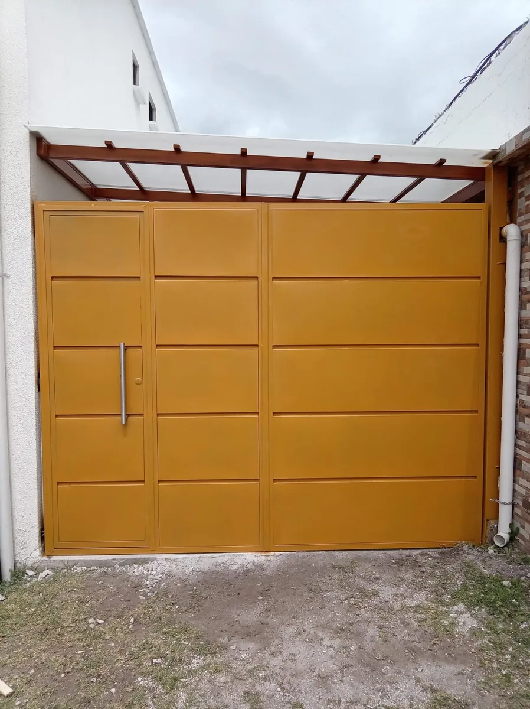
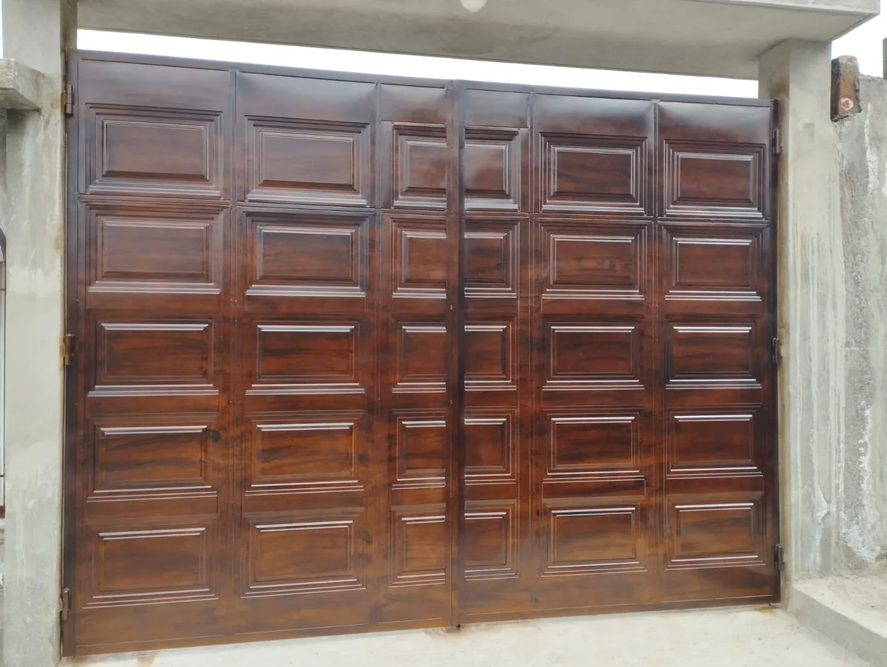
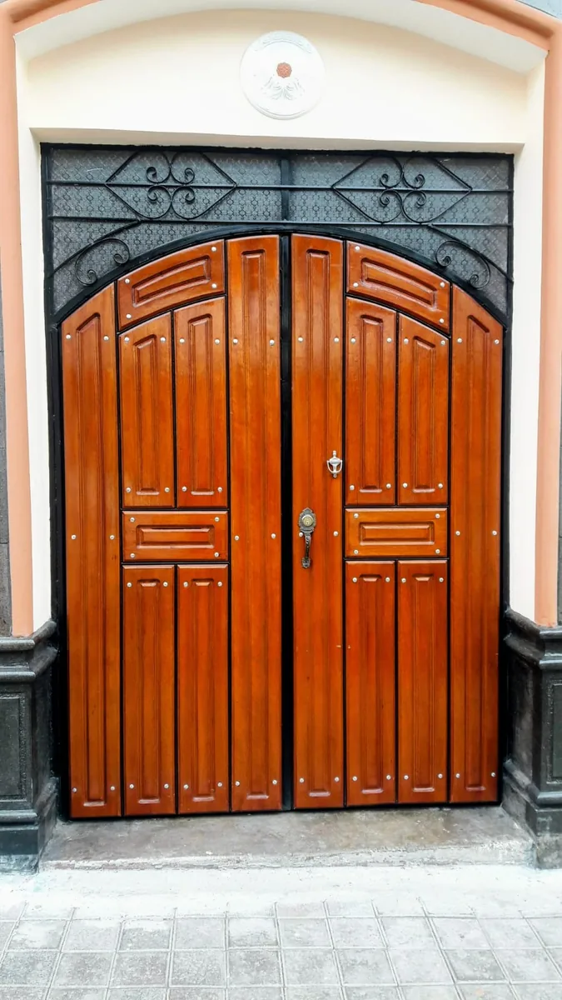
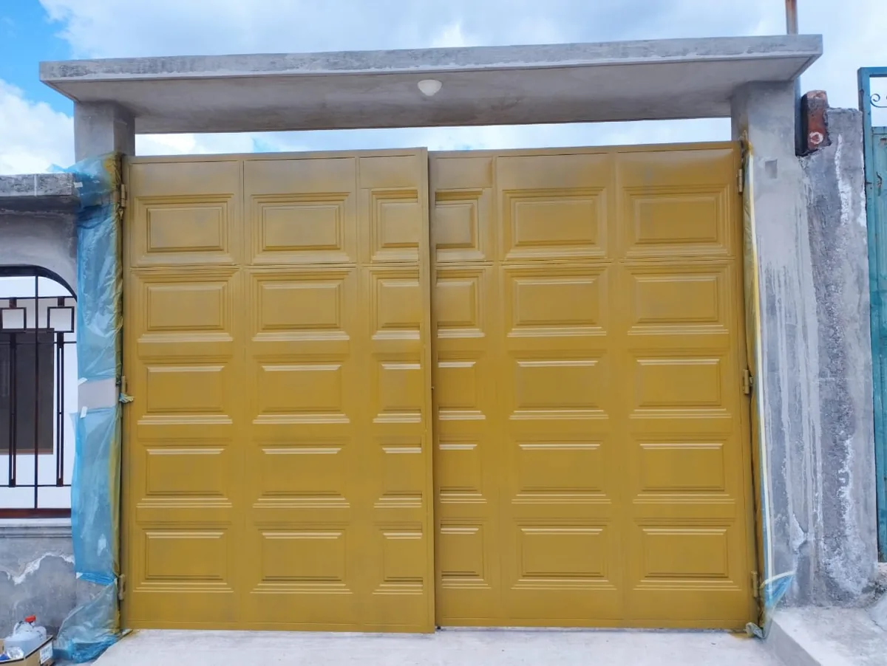
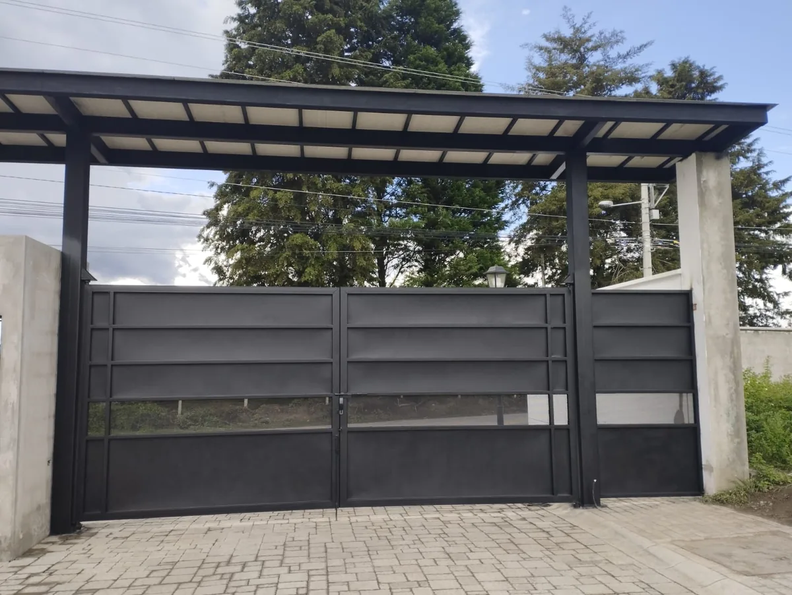
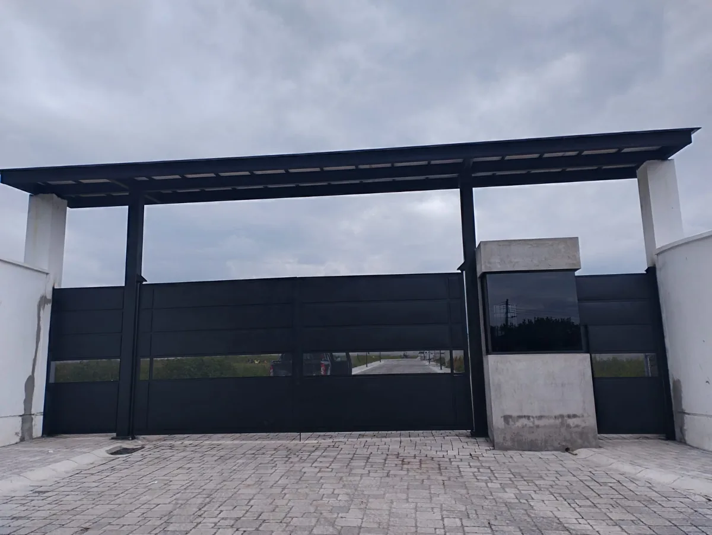
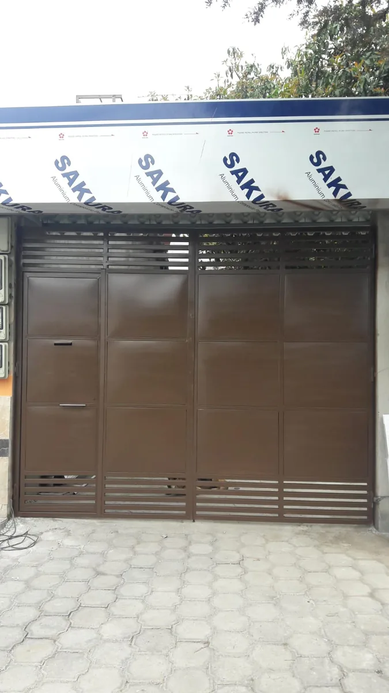
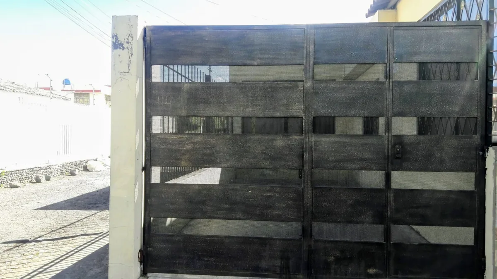
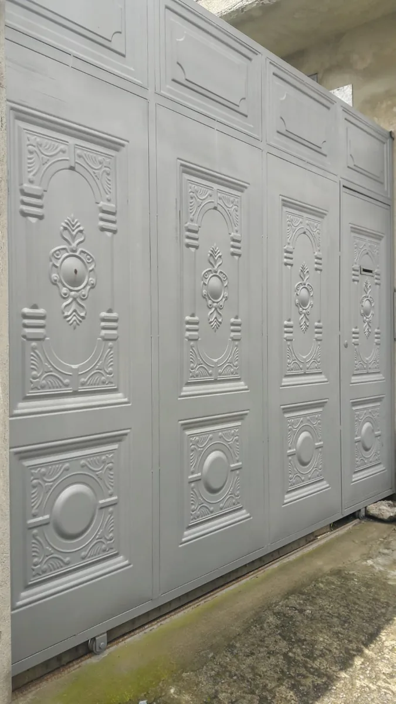

Portones y puertas de garaje a medida en hierro, acero y tool
Puertas de Garaje y Portones Metálicos en Quito
En Cerrajería Acctura fabricamos e instalamos puertas de garaje y portones metálicos a medida en Quito para viviendas, conjuntos residenciales y locales comerciales. Con más de 22 años de experiencia trabajando el hierro, el acero y el tool, entregamos portones resistentes, seguros y con acabados a la altura de cada fachada.
Tipos de portones que fabricamos
- Portones batientes: de una o dos hojas, ideales para entradas amplias.
- Portones corredizos: aprovechan el espacio lateral, perfectos cuando no hay lugar para abrir hacia afuera.
- Puertas enrollables: prácticas y seguras para garajes y locales comerciales.
- Portones seccionales: diseño moderno que sube en vertical y ahorra espacio.
¿Por qué elegir Acctura?
- Fabricación 100% a medida según tus dimensiones y diseño.
- Medición en obra para un presupuesto exacto.
- Materiales resistentes: hierro, acero y tool con acabados de calidad.
- Atención en todo Quito y sus valles.
- Portones y puertas de garaje desde $850, según medidas.
Cuéntanos qué tipo de portón necesitas y te ayudamos a elegir la mejor opción para tu espacio. Escríbenos por WhatsApp para cotizar tu puerta de garaje en Quito.
Portones y Puertas de Garaje que Hemos Fabricado









Preguntas Frecuentes sobre Puertas de Garaje
¿Cuánto cuesta una puerta de garaje en Quito?
Nuestras puertas de garaje y portones metálicos empiezan desde $850. El precio final varía según las medidas, el tipo de puerta y el material. Medimos en obra para darte un presupuesto exacto y sin sorpresas.
¿Qué tipos de puertas de garaje y portones fabrican?
Fabricamos portones batientes, corredizos, enrollables y seccionales, en hierro, acero y tool. Cada puerta se hace a medida según el espacio y el diseño que necesites.
¿Miden en obra antes de cotizar?
Sí. Realizamos la medición directamente en obra para calcular las dimensiones exactas y entregarte un presupuesto preciso.
¿Cuánto tarda la fabricación e instalación?
El tiempo depende del tamaño y del diseño de la puerta. Te confirmamos el plazo exacto al momento de la cotización, después de la medición en obra.
¿En qué zonas de Quito instalan?
Trabajamos en todo Quito y sus valles: Cumbayá, Tumbaco, Calderón, Los Chillos, Sangolquí, Nayón y alrededores.